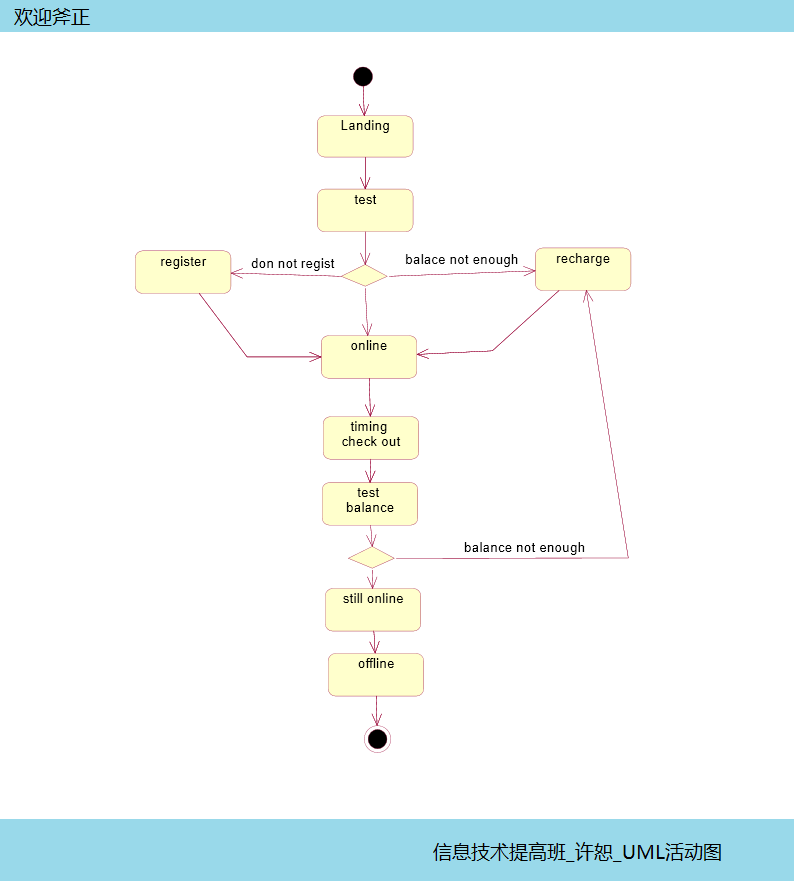
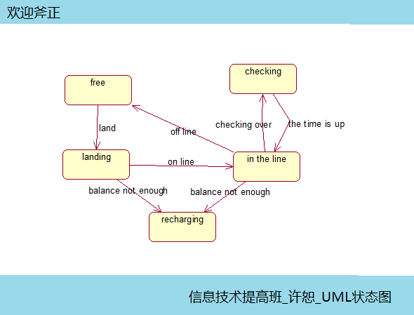

以前的那些图都是通过静态的角度看将要做的系统，今天要说的这两个图是认识系统的一个转折点，由静态转入动态，让这个系统透过时空提前来到我们面前，让设计者和开发者更好地掌握整个系统的全貌和动态信息！
以前静态图的特点是注重粒度与关系，动态图则不相同，它更注重时间性质，更注重事件的先后与结果，如果说一个系统是一个大象，我们以前的工作是建造骨骼，肌肉和皮肤，从今天开始的工作是赋予这个大象能量，让大象跑起来，动起来，如果这个大象非常大，大到一个人无法处理，就要合作，各个击破！
今天的这个图主要是说大象做某件事的流程，以及大象的状态：
以下两幅图，是对理论的实践，请大家斧正：

